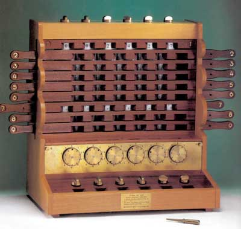

The First Calculator
The first mechanical calculator prototype was made by Wilhelm Schickard in 1623. He planned on supporting addition, subtraction, multiplication, and division. Unfortunately, his prototype was lost in a house fire.

The first real advancement towards creating calculators could be seen in the 1600's, with increasingly wide use after the 1800's.
The first mechanical calculator prototype was made by Wilhelm Schickard in 1623. He planned on supporting addition, subtraction, multiplication, and division. Unfortunately, his prototype was lost in a house fire.
The first working mechanical calculator was invented by Blaise Pascal in 1642. He planned on supporting all four arithmetic operations, but the device ended up only supporting addition and subtraction.
The first calculator to support all four standard arithmetic operations was the Arithmometer, invented in 1820 by Thomas de Colmar. Several copies of the device were made between the mid 19th and early 20th centuries.
The first calulator to have buttons was the Comptometer. It was patented by Dorr. E. Felt in 1887.
The last major milestone of mechanical calculators took place in 1948 with the release of the Curta calculator. It was small enough to fit in one's pocket.